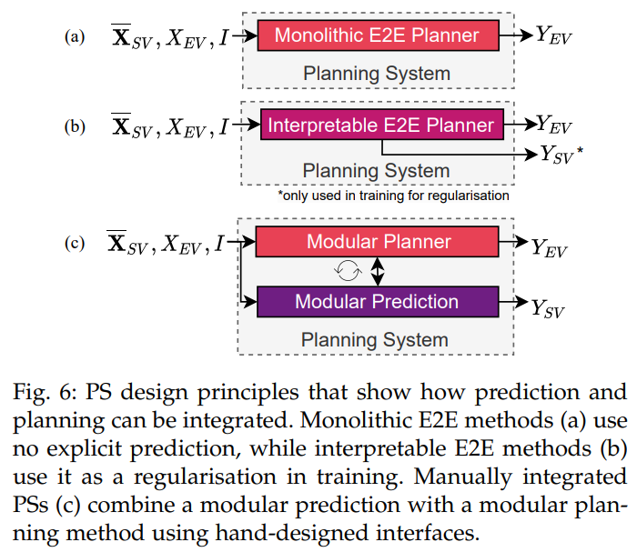

符号标记
$X_i=\{x_{t-t_{obs}},…,x_{t-1},x_t\}$: 障碍物$i$的历史状态特征，每一个$x$有多维特征，2D或者3D的位置信息，heading， speed等
$X_{EV}$: ego vehicle的历史特征
$X_{SV}$: Surrounding Vehicles的历史特征
$\overline{X}_{SV}=\{X_1,X_2,…,X_m\}$: 周围所有车的历史特征
$Y_i = {y_{t+1}, y_{t+2}, . . . , y_{t+tpred} }$: 障碍物$i$的未来信息，一般也称为未来轨迹
$I$: 除未来轨迹和历史特征，其他场景信息，包括语义信息，交通灯，交通标志等
$\overline{X}=\{\overline{X}_{SV}, X_{EV}\}$: 所有障碍物车的历史体特征
正文
本文从整个轨迹规划系统（PS）的角度分析设计决策对交互场景中行为的影响。特别是，文本探讨了PS如何考虑周围车辆（SV）的预期行为，以及PS在SV未来行为不确定性下如何进行规划。此外，还分析了自驾车（EV）是否能特别影响SV的行为。
- 交互场景影响：PS设计决策如何影响与其他车辆的交互。
- 考虑SV行为：PS如何基于SV的预期行为进行轨迹规划。
- 不确定性规划：PS在SV行为不确定时如何轨迹规划。
- 影响SV行为：EV是否能够影响SV的行为。
整合原则
如图1所示，现在有三种不同的方式来实现planning模块.


Monolithic E2E
该end to end系统仅仅只由单个的planner组成，周围车没有给出显式的预测轨迹线，然而人类驾驶的过程中，其实是有对周围车辆未来行驶情况的预测的，所以即使没有给出显式的预测线，这样的模仿学习依然会隐式的学习到预测情况。
该方法将所有关于潜在未来情况和自车（EV）与周围车辆（SVs）之间互动的推理都转移到了潜在空间（latent space），这几乎没有施加任何约束。因此，模型可以学习预测SV的行为，并使用这些信息来更好地复制专家的驾驶决策。由于这种PS设计代表了最小偏见的设计选择，因此需要大量的训练数据来抵消高模型方差。
这种方法的主要缺点是可解释性太差。
Interpretable E2E
和Monolithic E2E不同，多了一个预测任务，和planning任务共享一个backbone。额外的学习目标可以作为一种正则化手段，得学习过程更加高效，并提高模型的泛化能力。然而，额外的学习目标会导致不同任务之间的权衡，通常需要通过经验来调整相应的损失函数的平衡系数。
与Monolithic E2E规划相比，显式预测增加了可解释性，并有助于内省。然而，这两种规划系统设计都依赖于潜在空间的隐式预测进行规划任务，因此无法提供安全保证。因此，我们将这种额外监督带来的驾驶性能提升（碰撞率降低）归因于其正则化效果。
Manual integration
手动将规划器与预测模块集成意味着每个任务都使用一个单独的子系统。这两个任务的相互作用是基于领域知识手动设计的。
组合方式介绍
目前两个模块组合使用的方式有如下三种
- 先走预测，再走自车规划。但是这样无法看见自车规划对他车预测的影响
- 先做自车planning的候选轨迹，预测根据这些候选轨迹出预测线，自车再从候选轨迹中选择一根
- prediction和planning一起进行
下面，我们会针对不同方法给出一个综述，并且着重于整合方法详细介绍
PRECOG
PRECOG使用概率模型进行条件多智能体预测。PRECOG实现了自回归轨迹解码，用于联合预测自我驾驶车辆（EV）和周围车辆（SVs）。在每个时间步骤中，所有智能体的状态都会更新，并在下一个更新步骤中作为所有其他智能体的输入。不同于顺序使用prediction和planning，PRECOG是少数几个的Integrated Prediction and Planning（IPP）模型之一。
这意味着PRECOG不仅仅是对周围环境的反应，而且还考虑了未来的预测和规划。这使得PRECOG能够更好地适应复杂的驾驶环境，并做出更安全、更有效的决策。
DSDNet
DSDNetDSDNet结合了端到端和模块化的模型设计。每个顺序神经网络模块都可以额外访问感知主干的高维特征，这符合假设。对于每个检测到的车辆，都会预测一组可能的未来轨迹。
为了从采样的候选集中选择EV的plan，应用了一个手工制作的cost函数，该函数量化了EV候选轨迹和SVs预测轨迹的碰撞概率。
P3，LookOut,MP3
P3、LookOut和MP3这三种方法都使用成本函数来连接预测和规划。P3预测一个占用地图，LookOut使用预测的轨迹来评估不同的预定义的自车候选轨迹。MP3扩展了P3的方法，通过预测在线地图实现了无地图的方法。一个包含检测和预测的“动态状态地图”与预定的路线一起使用，以评估潜在的轨迹。这些方法的核心思想是，通过使用成本函数，将预测和规划两个步骤紧密地联系在一起，从而实现更有效的自动驾驶系统的设计和实现。
与其他集成原则相比，手动集成需要更多的工程努力，但通过结合先验知识，以有意义的方式限制了解决方案空间。通常，手动集成的预测系统（PSs）比端到端（E2E）系统提供更高的可解释性和更安全的计划。